무선설비기사 (2001-03-04 기출문제)
1과목: 디지털 전자회로
1. 반가산기(half-adder)를 이용하여 전가산기(full adder)를 만드는 회로구성을 올바르게 된 것은? (단, C는 가산기의 캐리(carry)를 나타내고, S는 합을 나타내는 비트이다.) (정확한 보기 내용을 아시는분께서는 오류 신고를 통하여 내용 작성부탁 드립니다. 정답은 2번입니다.)
- 복원중 (정확한 보기 내용을 아시는분께서는 오류 신고를 통하여 내용 작성부탁 드립니다. 정답은 2번입니다.)
- 복원중 (정확한 보기 내용을 아시는분께서는 오류 신고를 통하여 내용 작성부탁 드립니다. 정답은 2번입니다.)
- 복원중 (정확한 보기 내용을 아시는분께서는 오류 신고를 통하여 내용 작성부탁 드립니다. 정답은 2번입니다.)
- 복원중 (정확한 보기 내용을 아시는분께서는 오류 신고를 통하여 내용 작성부탁 드립니다. 정답은 2번입니다.)
(정답률: 알수없음)

2. 펄스 진폭변조(PAM)와 펄스 위상변조(PPM)의 장단점을 설명한 것중 옳지 않은 것은?
- 신호대 잡음비(S/N)는 PAM쪽이 뒤떨어진다.
- 두 변조 방식은 모두 다중통신에 적합하다.
- 채널수가 같을 경우 PAM쪽이 펄스폭을 더욱 크게 할 수 있다.
- PPM이 채널수를 더 많이 할 수 있다.
(정답률: 알수없음)
3. 다음 식을 간략화하면 어떻게 표시되는가?
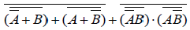
- 1
- 0
- (A+B)
- (A*B)
(정답률: 알수없음)
4. 다음과 같은 회로에서 다이오드 D1과 D2가 동시에 차단상태로 되는 조건으로 옳은 것은 ? (단, V2 ＞V1이다.)
- Vi ≤V1
- V1 ＞Vi ＞V2
- V1＜Vi＜V2
- Vi ≥V2
(정답률: 알수없음)
5. 그림의 논리회로를 간소화하였을 때 출력 X는?
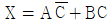
- X =A+B
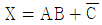
- X =AB
(정답률: 알수없음)
6. 그림과 같은 회로에서 V0를 구하면 얼마인가?
- 2[V]
- 3[V]
- 4[V]
- 5[V]
(정답률: 알수없음)
7. 다음 연산증폭 회로에서 출력 V0는?
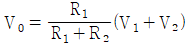
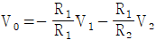
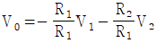
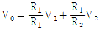
(정답률: 알수없음)
8. 그림(a)의 회로에 그림(b)와 같은 입력을 인가시 출력파형의 변곡점 값의 변화 순서는? (단, 다이오드는 이상적이며 V R1=-3[V], V R2=+4[V], R=10[㏀])
- +4[V], +4[V], -3[V], -3[V]
- +4[V], -3[V], -3[V], +4[V]
- -3[V], -3[V], +4[V], +4[V]
- -3[V], +4[V], +4[V], -3[V]
(정답률: 알수없음)
9. 그림과 같은 교류적 등기회로로 표시되는 발진회로의 발진주파수는?
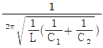
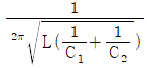
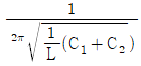
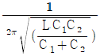
(정답률: 알수없음)
10. 그림의 궤환회로에서 궤환을 안했을 때 중역대 주파수에서의 전압 이득 Avo=-500, 궤환율 β=-0.⑤, 신호 전압 Vs= 0.1[V]이면 궤환했을 때의 전압이득 Avof은 얼마인가?
- -19
- -38
- -57
- -76
(정답률: 알수없음)
11. 다음의 발진회로에서 다이오드D의 역할은?
- 클램퍼 다이오드
- 댐핑 다이오드
- 온도 보상 다이오드
- 재생 스위치 동작
(정답률: 알수없음)
12. 다음의 Karnaugh도로 주어진 함수를 최소의 곱의 합함수로 만든 것은?
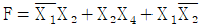
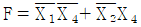
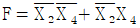
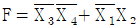
(정답률: 알수없음)
13. 그림과 같은 브리지 정류회로에 관한 설명 중 틀린 것은?
- R L에는 A에서 B쪽으로 전류가 흐른다.
- R L에서 흐르는 전류는 전파 정류된 파형이다.
- 다이오드에 걸리는 역방향 전압의 최대치는 T의 2차 전압의 최대치의 2배에 가깝다.
- R L에 걸리는 전압의 최대치는 T의 2차 전압의 최대치에 가깝다.
(정답률: 알수없음)
14. 그림과 같은 회로에서 CR이 충분히 클 때 입력단자 A, B에 그림과 같은 구형파 전압을 입력시키면 출력단자 C, D에서 볼 수 있는 파형은? (정확한 보기 내용을 아시는분께서는 오류 신고를 통하여 내용 작성부탁 드립니다. 정답은 1번입니다.)
- 복원중 (정확한 보기 내용을 아시는분께서는 오류 신고를 통하여 내용 작성부탁 드립니다. 정답은 1번입니다.)
- 복원중 (정확한 보기 내용을 아시는분께서는 오류 신고를 통하여 내용 작성부탁 드립니다. 정답은 1번입니다.)
- 복원중 (정확한 보기 내용을 아시는분께서는 오류 신고를 통하여 내용 작성부탁 드립니다. 정답은 1번입니다.)
- 복원중 (정확한 보기 내용을 아시는분께서는 오류 신고를 통하여 내용 작성부탁 드립니다. 정답은 1번입니다.)
(정답률: 알수없음)
15. 전력 증폭기의 종류가 아닌 것은?
- A급 증폭기
- B급 증폭기
- AB급 증폭기
- AC급 증폭기
(정답률: 알수없음)
16. 평형 변조회로의 목적은?
- 변조도를 크게 하기 위함
- 직선성을 개선하기 위함
- SSB 파를 얻기 위함
- 변조 출력을 줄이기 위함
(정답률: 알수없음)
17. 연산증폭기를 이용한 아날로그컴퓨터(analog computer)의 구성요소로서 부적당한 것은?
- 적분기(Intergrator)
- 미분기(differentiator)
- 합산기(summing amplifier)
- 비반전증폭기(non-inverting amplifier)
(정답률: 알수없음)
18. 비동기식 모드(mode)-13 계수기를 만들려면 몇 개의 플립플롭이 필요한가?
- 13
- 7
- 4
- 2
(정답률: 알수없음)
19. 다음 로직회로(logic circuit)의 출력은?
- AB
- AC
- ABC
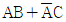
(정답률: 알수없음)
20. 다음 중 불연속 레벨 변조에 해당되는 것은?
- PNM
- PWM
- PPM
- PFM
(정답률: 알수없음)
2과목: 무선통신 기기
21. 정류 부궤환 회로의 장점에 대한 설명으로 틀린 것은?
- 증폭도의 안정
- 비 직선 일그러짐 감소
- 주파수 특성의 개선
- 내부저항의 증대
(정답률: 알수없음)
22. 무선 통신용 송신기에서 입력신호를 변조(Modulation)하는 가장 타당한 이유는?
- 전송매개체와 신호를 정합(Matching)시키기 위해
- 주파수를 높이기 위해
- 수신기에서 받는 신호를 변환할 필요가 없기 때문에
- 실제 구현시 회로가 간단하기 때문에
(정답률: 알수없음)
23. 중화회로에 대한 설명으로 맞지 않는 것은?
- 중화는 중화용 콘덴서에 의한 것과 중화용 코일에 의한 것이 된다.
- 중화용 콘덴서에 의한 방법으로는 TR이나 진공관을 사용한다.
- 부궤환방식으로 공진을 유도한다.
- 자기발진을 방지할 수 있다.
(정답률: 알수없음)
24. 다음은 벡터 합성법에 의한 FM송신기에 대한 설명이다. 합당치 않은 것은 어느 것인가?
- 리액턴스관을 사용하여 주파수 안정도가 매우 좋다.
- 자동주파수 제어회로가 불필요하다.
- IDC회로에서 일정 입력 레벨로 증폭을 제한한다.
- 위상 변조로 등가 FM파를 얻으려면 전치보상기 회로가 필요하다.
(정답률: 알수없음)
25. 다음 회로의 명칭은?
- 정형 회로
- 반파정류회로
- 전파배전압정류회로
- 반파배전압정류회로
(정답률: 알수없음)
26. 전파계로는 강전계의 전파는 측정할 수 있으나 미약한 전파의 전계는 측정이 곤란하다. 그 이유로 적당한 것은?
- 소결합 하여야 하므로
- 밀결합 하여야 하므로
- 에너지의 일부를 흡수하므로
- 등조 회로의 주파수가 변화하므로
(정답률: 알수없음)
27. 다음 중 정류회로의 올바른 구성은?
- 변압기 - 평활회로 - 정류부 - 정전압회로 - 부하
- 정류부 - 변압기 - 평활회로 - 정전압회로 - 부하
- 변압기 - 정류부 - 평활회로 - 정전압회로 - 부하
- 변압기 - 정류부 - 정전압회로 - 평활회로 - 부하
(정답률: 알수없음)
28. 통신방식중 frequency division duplexing이란?
- 송신 및 수신주파수를 별도로 하고 주파수이격을 두어 통신하는 방식이다.
- 같은 캐리어주파수를 이용하여 시간을 나누어 앞부분은 송신에, 뒷부분은 수신에 사용하는 방식이다.
- 주파수를 공유하기 위해 여러가입자 신호에 대해 주파수를 분해하여 사용하는 방식이다.
- 한 주파수만 사용하여 전송하는 방식으로 여러가입자일 경우는 신호를 더하여 송신하고 나중에 분리 하는 방식이다.
(정답률: 알수없음)
29. 다음은 BPF 필터의 사용상 또는 설계상 주의할 점을 나타낸 것이다. 잘못 설명한 것은 어느 것인가?
- 통과대역의 감쇠량이 매우 커야 한다.
- 차단특성이 예리해야 된다.
- 저지대역에서의 신호는 차단되어야 한다.
- 삽입손실이 적어야 한다.
(정답률: 알수없음)
30. 위성의 자세를 제어하기 위해서는 3개의 기준축이 설정된다. 이에 속하지 것은?
- 롤(roll)축
- 요(yaw)축
- 토크(torque)축
- 피치(pitch)축
(정답률: 알수없음)
31. 무선 송신기의 송신 주파수 변동을 감소시키기 위한 대책이 아닌 것은?
- 주위 온도의 영향을 감소시킨다.
- 부하 변동의 영향을 감소시킨다.
- 전원의 안정도를 높인다.
- 발진기의 동조 회로 Q가 낮은 부품을 사용한다.
(정답률: 알수없음)
32. 슈퍼헤테로다인 수신기에서 스퓨리어스 레스폰스(spurious response)의 주된 원인은?
- 고주파 증폭부
- 저주파 증폭부
- 중간주파 증폭부
- 국부 발진부
(정답률: 알수없음)
33. 레이다에서 발사된 펄스 전파가 8(㎲)후에 목표물에서 반사되어 되돌아 왔다. 목표물까지의 거리는?
- 2400[m]
- 1200[m]
- 800[m]
- 600[m]
(정답률: 알수없음)
34. FM수신기에서 이득이 12(dB), 잡음지수가 1.3(dB)인 증폭기 후단에 이득이 8(dB), 잡음지수가 1.5(dB)인 또다른 증폭기가 있다. 이 수신기의 종합 잡음지수는?
- 1.34[dB]
- 1.41[dB]
- 1.54[dB]
- 2.8[dB]
(정답률: 알수없음)
35. 오실로스코프(Oscilloscope)의 수직축과 수평축 입력에 주파수와 진폭이 같고 위상이 180°다른 전압을 가했을 때 나타나는 리서쥬도형(Lissajous Pattern)은?
- 사선
- 원
- 타원
- 사각형
(정답률: 알수없음)
36. PM을 등가 FM으로 만들기 위하여 사용되는 회로는?
- pre-emphasis회로
- pre-distorter회로
- de-emphasis회로
- IDC회로
(정답률: 알수없음)
37. 수퍼헤테로다인 수신기에서 단말 조정은 왜 필요한가?
- 중간주파수를 일정히 하기 위하여
- 발진주파수의 변동을 막기 위하여
- 안정된 고주파 증폭을 위하여
- 중간주파수 대역을 넓게 취하기 위하여
(정답률: 알수없음)
38. FSK 방식의 특징이 아닌 것은?
- 비교적 회로가 간단하다.
- ASK에 비하여 대역폭이 넓다.
- 잡음 및 레벨 변동에 강하다.
- AFC회로가 필요없다.
(정답률: 알수없음)
39. 수퍼헤테로다인 수신기에서 BFO(Beat Frequency Oscillator)를 사용하는 목적은?
- F1A 및 A2A 전파를 가청 주파수로 수신하기 위하여
- A1A 전파를 가정 주파수로 수신하기 위하여
- A3E 전파를 가청 주파수로 수신하기 위하여
- 중간 주파수를 정확하게 맞추기 위하여
(정답률: 알수없음)
40. 그림과 같이 고주파 증폭기의 이득이 15[dB], 변화 이득이 -1.5[dB]의 수신기에 15[㎂]의 고주파 전압을 가하였더니 검파기로 가는 출력이 1.5[V]가 되었을 때, 중간주파 증폭기의 이득은?
- 5.3[dB]
- 76[dB]
- 86.5[dB]
- 96[dB]
(정답률: 알수없음)
3과목: 안테나 공학
41. 태양의 폭발에 의해 방출된 자외선이 E층의 전자밀도를 증가시켜 통신을 불가능하게 만드는 현상은?
- 델린저 현상
- 대척점 효과
- 룩셈부르크 현상
- 페이딩 현상
(정답률: 알수없음)
42. 파라볼라 안테나의 절대이득을 계산하는 식은? (η: 개구 효율, D : 파라볼라의 직경, λ : 파장)
- ηπ2 D/λ
- η(πD/λ)2
- η(λ/πD)2
- ηλ/(πD)2
(정답률: 알수없음)
43. 1/4 파장의 수직 접지 안테나에 200[W]의 전력이 공급되고 있을 때, 최대방사 방향으로 1[km] 떨어진 점의 전계강도는 얼마인가? (단, 안테나 효율은 78.5[%], 대지는 완전 도체의 평면)
- 98[V/m]
- 98[mV/m]
- 124[mV/m]
- 140[mV/m]
(정답률: 알수없음)
44. 지구의 실제반경을 r, 등가지구반경을 R, 등가지구 반경계수를 K라고 할 때, 이들은 어떤 관계식을 갖는가?
- R=Kr
- R=Kr2
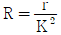
- r=KR
(정답률: 알수없음)
45. 진행파에 관한 특징으로서 옳지 않은 것은?
- 선로의 특성 임피던스와 부하가 정합되어 있을 때 진행파가 발생한다.
- 전류, 전압의 분포는 선로상의 어느 위치에서나 대체로 동일하다.
- 전송손실이 매우 적다.
- 전류, 전압의 위상은 선로상의 어느 위치에서나 대체로 동일하다.
(정답률: 알수없음)
46.
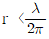
인 안테나 근방에서의 주된 전계는? (단, r : 안테나에서 관측점까지의 거리)- 정전계
- 정자계
- 유도전계
- 방사선계
(정답률: 알수없음)
47. 호온안테나의 설명 중 잘못된 것은?
- 호온의 길이를 일정하게 하고 개구각(또는 개구면적)을 증가시켜가면 어떤 각도에서 이득이 최대로 된다.
- 개구면이 일정할 때 호온의 길이를 길게 할수록 지향성은 예리하게 되고 이득은 크게 된다.
- 각추 호온이 가장 널리 사용한다.
- 호온 안테나는 고이득의 안테나로 적당하므로 전자렌즈나 parabola 반사경과 조합시킬 필요가 없다.
(정답률: 알수없음)
48. 복사전력밀도가 최대복사 방향의 1/2로 감소되는 값을 갖는 각도로 지향특성의 첨예도를 표시하는 것은?
- 전후방비
- 주엽(main lobe)
- 부엽(sidelobe)
- 빔폭
(정답률: 알수없음)
49. 도선을 원형 또는 직사각형등으로 1회 이상 감은 것으로 중파의 방위측정에 사용하는 안테나는?
- 루우프 안테나
- 롬빅 안테나
- 웨이브 안테나
- 다이폴 안테나
(정답률: 알수없음)
50. 특성 임피던스가 50[Ω]인 동축선로와 부하저항 40[Ω]을 1/4 파장 선로를 써서 임피던스 정합코자 할 때 이 1/4파장선로의 특성 임피던스는 얼마인가?
- 36.7[Ω]
- 40.7[Ω]
- 44.7[Ω]
- 51.7[Ω]
(정답률: 알수없음)
51. 다음 중 길이가 1[m]인 λ/4 수직접지 안테나의 실효높이는?
- 0.54[m]
- 0.64[m]
- 0.74[m]
- 0.84[m]
(정답률: 알수없음)
52. 다음 동조급전선에 관한 설명 중 적당하지 않은 것은?
- 급전선에는 정재파가 있다.
- 송신기와의 결합은 LC공진회로로 한다.
- 전송효율이 가장 좋고 송신기와의 결합이 간단하다.
- 선로의 길이에 제약을 받는다.
(정답률: 알수없음)
53. 전파가 전리층에 들어갔을 대 일어나는 현상과 거리가 먼 것은?
- 전파의 굴절
- 감쇠작용
- 편파면의 회전
- 라디오 닥트(Radio duck)현상
(정답률: 알수없음)
54. 극초단파(마이크로파)의 급전선으로 도파관을 사용하는 가장 큰 이유는?
- 유전체 손실이 적다.
- 관내파장이 짧기 때문에 안정한 전송이 가능하다.
- 관벽에는 전류가 흐르지 않으므로 관벽의 저항이 커도 손실과는 관계없다.
- 부하와의 정합상태가 불량하여도 정재파가 발생하지 않는다.
(정답률: 알수없음)
55. 장중파대용 안테나로서 진행파만 존재하는 것은?
- beverage안테나
- 루우프(loop)안테나
- 역L형 안테나
- bellini - tosi 안테나
(정답률: 알수없음)
56. 급전선을 통과하여 부하에 공급되는 전력은 파동 임피던스 Z0, 선로의 정재파비 S, 정재파의 루우프(loop)정의전류 I를 사용하면 어떻게 표시할 수 있는가?
- I2ㆍZ0
- I2ㆍZ0ㆍS
- I2/(Z0ㆍS)
- I2ㆍ(Z0/S)
(정답률: 알수없음)
57. 슈퍼 턴스타일 안테나(super turnstile antenna)와 슈퍼게인 안테나(super gain antenna)의 설명 중 잘못 된 것은?
- 소자의 개수를 높일수록 이득이 커진다.
- 주파수 대역폭을 넓게 가질 수 있다.
- 라디오 방송용으로 지향성은 거의 없다.
- 직렬과 병렬공진의 작용을 시킴으로서 대역폭을 넓히고 있다.
(정답률: 알수없음)
58. 초단파대 이상 통신에 사용되는 안테나로 부적당한 것은?
- Helical Ant.
- Parabola Ant.
- Horn reflector Ant.
- Rhombic Ant.
(정답률: 알수없음)
59. 안테나의 고유주파수를 높이기 위한 가장 적당한 방법은?
- 안테나에 병렬로 코일을 접속한다.
- 안테나에 직렬로 코일을 접속한다.
- 안테나에 직렬로 콘덴서를 접속한다.
- 안테나에 병렬로 콘덴서를 접속한다.
(정답률: 알수없음)
60. 마이크로웨이브(microwave) 통신의 장점이 아닌 것은?
- 광대역 통신이 가능하며 사용주파수의 범위가 넓다.
- 외부잡음의 영향이 적고 PTP(point to point)통신이 가능하다.
- 전리층을 통과하여 전파하며 중계기 없이도 원거리 통신이 가능하다.
- 예민한 지향성과 고이득을 가진 안테나를 소형으로 만들 수 있다.
(정답률: 알수없음)
4과목: 무선통신 시스템
61. 위성국 중계장치의 종류로 적합하지 않은 것은?
- 직접중계방식
- 호모다인중계방식
- 헤테로다인중계방식
- 재생중계방식
(정답률: 알수없음)
62. 대기중 H2O에 의한 전파의 흡수감쇠가 가장 큰 주파수대역은 몇[GHZ]대역인가?
- 0.5
- 2.5
- 5.5
- 10.5
(정답률: 알수없음)
63. 우리나라 TV 방송국의 한 채널분 대역폭은?
- 6[MHZ]
- 8.2[MHZ]
- 3.58[MHZ]
- 4.2[MHZ]
(정답률: 알수없음)
64. 주파수의 효율적인 이용과 관계가 가장 먼 것은?
- SSB
- FM
- CDMA
- Microcell
(정답률: 알수없음)
65. 무선통신의 주파수특성에 관한 설명으로 가장 적합한 것은?
- AM 방송통신에서 두 개의 방송국으로부터 전파된 동일주파수가 중첩되는 지역에서는 수신이 잘된다.
- FM방송에서 수신감도를 향상시키기 위해서는 방송주파수 대역을 좁게 하여야 한다.
- 이동전화에서의 주파수재사용은 동일주파수가 중첩되는 지역이 없도록 하여야 한다.
- 이동전화에서 사용하는 셀구성은 지형적 특성을 고려하여 동일기지국에 동일주파수 사용이 많을수록 효과적이다.
(정답률: 알수없음)
66. 무선통신망을 설계시 네트워크의 구성 요소로서 신호를 송신기에서 수신기까지 전달하는 전송로와는 거리가 먼 것은?
- 동축 케이블
- 광 케이블
- 공간
- 저역 통과 필터
(정답률: 알수없음)
67. 가로폭이 39[cm]인 TV수상기에서 올바른 상의 우측 3[cm]위치에 고우스크[ghost]현상이 나타날 경우, 직접파와 반사파의 통로차는 얼마 정도인가? (단, 하나의 수평주사기간은 52[㎲]이다.)
- 약 20[m]
- 약 120[m]
- 약 300[m]
- 약 1,200[m]
(정답률: 알수없음)
68. MICRO파 다중 통신 방식에서 무급전 중계 방식의 설명 중 잘못된 것은?
- Micro파의 직진성을 이용한다.
- 급속 반사파이나 안테나에 의해서 그 진행로를 변화시킨다.
- 중계용 전력을 필요로 한다.
- 비교적 근거리의 송ㆍ수신국 사이에 산과 같은 장애물이 있을 때 사용한다.
(정답률: 알수없음)
69. 스미스 도표에서 알 수 없는 것은?
- 정규화 임피던스
- 반사계수
- 주파수
- VSMR
(정답률: 알수없음)
70. CDMA(Code Division Multiple Access) 방식의 장점이 아닌 것은?
- 비화성이 있다.
- 접속국의 수를 많이 할 수 있다.
- S/N이 작아도 통신이 가능하다.
- 전파의 간섭이나 혼신방해에 강하다.
(정답률: 알수없음)
71. 통신망설계에 있어 기본설계내용에 포함되지 않는 것은?
- 설계기준
- 공사기간
- 시공방법
- 예산서
(정답률: 알수없음)
72. 한 전송선로의 데이터 전송시간을 일정한 시간 구간으로 나누어 각부채널에 차례로 분배함으로써 몇 개의 저속부채널이 한 개의 고속 전송선을 나누어 이용하는 다중화방식은?
- TDM
- FDM
- PCM
- SDM
(정답률: 알수없음)
73. 시분할 다중화(TDM) 방식인 디지털 통신(PCM)방식의 장점으로 적합하지 않은 것은?
- 레벨 변동에 강한 특성을 갖는다.
- FDM에 비해 점유대역폭이 좁다.
- CH당 정보량이 많다.
- 회선 및 루트 변경이 용이하다.
(정답률: 알수없음)
74. 무선통신에 사용되는 안테나는 주파수 종류에 따라 안테나 종류도 다양한데 이중 상호간 맞게 연결된 것은?
- 톱로딩 안테나 - 마이크로파 안테나
- 다이폴 안테나 - 장, 중파용 안테나
- 파라볼라 안테나 - 단파 안테나
- 루프 안테나 - 초단파 안테나
(정답률: 알수없음)
75. 무선통신방식의 최대 결점으로 보는 것은?
- 간섭
- 통달거리
- 건설비
- 회선용량
(정답률: 알수없음)
76. AM 수신기의 선택도를 향상시키기 위한 방법은?
- 동조회로의 Q를 낮게 한다.
- 고주파 증폭단을 둔다.
- 중간 주파수를 높게 선정한다.
- 중간 주파수 대역을 넓게 취한다.
(정답률: 알수없음)
77. 위성통신용으로 가장 많이 이용되는 전파는?
- HF
- VHF
- SHF
- UHF
(정답률: 알수없음)
78. INTELSAT 시스템에서 현재 많이 사용되고 있는 방식은?
- FDM/AM/FDMA 방식
- FDM/FM/FDMA 방식
- TDM/AM/TDMA 방식
- TDM/FM/TDMA 방식
(정답률: 알수없음)
79. 셀룰라통신에서 셀재사용률 K = 7이며, 6 sectorizing 배치를 할 때 총 sector 수는?
- 13
- 42
- 52
- 62
(정답률: 알수없음)
80. 셀(cell)방식의 이동통신에서 문제점으로 가장 영향이 적은 것은?
- 대류권 산란
- 다경로 페이딩(multipath fading)
- 채널간 간섭(inter channel interference)
- 동일채널 간섭(co-channel interference)
(정답률: 알수없음)
5과목: 전자계산기 일반 및 무선설비기준
81. ALU가 수행하는 연산이 아닌 것은?
- AND
- OR
- 10진 연산
- 산술 연산
(정답률: 알수없음)
82. 휴대국의 무선설비 기준이 아닌 것은?
- 작고 가벼워서 휴대하기 용이할 것
- 항공기에 탑재하는 것은 그 공중선 전력은 5W 이하일 것
- 송수신 장치 및 마이크로폰이 단일채로 통합 수용되어 있을 것
- 무선설비의 규격전력은 500W 이하이며, 이동하는 국일때는 50W 이하일 것
(정답률: 알수없음)
83. 외국의 법인이 개설할 수 있는 무선국은?
- 실험국
- 무선항향육상국
- 항공국
- 선박지구국
(정답률: 알수없음)
84. 다음 무선국중 허가의 유효기간이 3년인 것은?
- 항공국
- 고정국
- 기지국
- 해안지구국
(정답률: 알수없음)
85. 송신 공중선의 형식과 구성에 적합하지 아니한 것은?
- 공중선의 이득과 능률이 가능한 한 클 것
- 공중선의 형식과 구성이 간편할 것
- 정합이 충분할 것
- 만족한 지향성을 얻을 수 있을 것
(정답률: 알수없음)
86. 다음 중 시뮬레이션에 가장 편리한 고급 언어는 무엇인가?
- FORTRAN
- COBOL
- PASCAL
- SIMSCRIPT
(정답률: 알수없음)
87. 무선국 허가증의 기재사항이 아닌 것은?
- 허가 연월일 및 허가번호
- 시설자의 성명 또는 주소
- 전파의 형식 및 점유주파수대여폭과 주파수
- 무선국의 준공기한
(정답률: 알수없음)
88. 전파형식 J3E의 법정 점유 주파수 대여폭의 허용치는?
- 3[KHz]
- 5[KHz]
- 6[KHz]
- 8[KHz]
(정답률: 알수없음)
89. 자기테이프의 시작점으로부터 4-5mm의 위치에(자성 면과는 반대면) 알루미늄판을 붙여 데이터의 기록 시작점을 나타내는 것은?
- EIT
- BIT
- EOT
- BOT
(정답률: 알수없음)
90. 다음 10진수 456을 BCD(8421)코드로 표시하면?
- 0100 0101 0110
- 100 101 110
- 0001 1100 1000
- 111 001 000
(정답률: 알수없음)
91. 전자계산기에서 보수(Complement Number)를 쓰는 이유 중 옳은 것은?
- 음의 소수를 나타내기 위하여
- 소수의 표현이 가능하도록 하기 위하여
- 복소수의 허수부분을 표현하기 위하여
- 가산기에 의해 뺄셈을 할 수 있도록 하기 위하여
(정답률: 알수없음)
92. 다음 회로의 명칭은?
- Multiplexer
- Decoder
- Adder
- Encoder
(정답률: 알수없음)
93. 산술연산 결과값이 오버플로가 일어났을 때 제어의 흐름이 계속되지 않고 고정된 기억위치로 스위치 되어 오버플로에 대한 적절한처리를 하도록 하는 것은?
- 서브루틴(subroutine)
- 분기(branch)
- 인터럽트(interrupt)
- 트랩(trap)
(정답률: 알수없음)
94. 다음 중 소프트웨어 프로그램이 아닌 것은?
- 스택
- 컴파일러
- 로더
- 응용패키지
(정답률: 알수없음)
95. 송신기의 보호장치와 직접적인 관계가 없는 것은?
- 퓨즈
- 수냉장치
- 절연차폐체
- 자동차단기
(정답률: 알수없음)
96. 수치적 자료표현이 아닌 것은?
- ASCII
- 10진법
- 고정 소수점
- 부동 소수점
(정답률: 알수없음)
97. 전자파장해기기의 전자파장해방지기준은 누가 정하여 고시하는가?
- 대통령
- 정보통신부장관
- 전파연구소장
- 무선국관리사업단장
(정답률: 알수없음)
98. 중앙처리장치의 기능이 아닌 것은?
- 산술연산과 논리연산을 함께 담당한다.
- 주기억장치에 기억되어 있는 프로그램 명령어를 호출하여 해독한다.
- 자료의 입출력을 제어하는 역할을 수행한다.
- 연산의 실행을 위해 보조기억장치에서 데이터를 읽어내어 연산장치에 보낸다.
(정답률: 알수없음)
99. 무선국의 무선설비중 형식등록 대상기기가 아닌 것은?
- 생활무선국의 무선설비의 기기
- 특정소출력 무선국용 무선설비의 기기
- 간이무선국의 무선설비의 기기
- 실용화시험국의 무선설비의 기기
(정답률: 알수없음)
100. F3E156 MHz 내지 162 MHz 주파수의 전파를 사용하는 국제 해상이동업무의 무선국의 무선설비조건이다.틀린 것은?
- 송신장치는 위상변조방식을 사용할 수 있다.
- 송신장치는 매옥타브당 6dBDML 디엠파시스 특성을 가진 주파수 변조를 사용할 수 있다.
- 발사되는 전파는 수평편파의 것일 것.
- 송신기의 반송파전력은 25W를 초과하지 아니할 것.
(정답률: 알수없음)